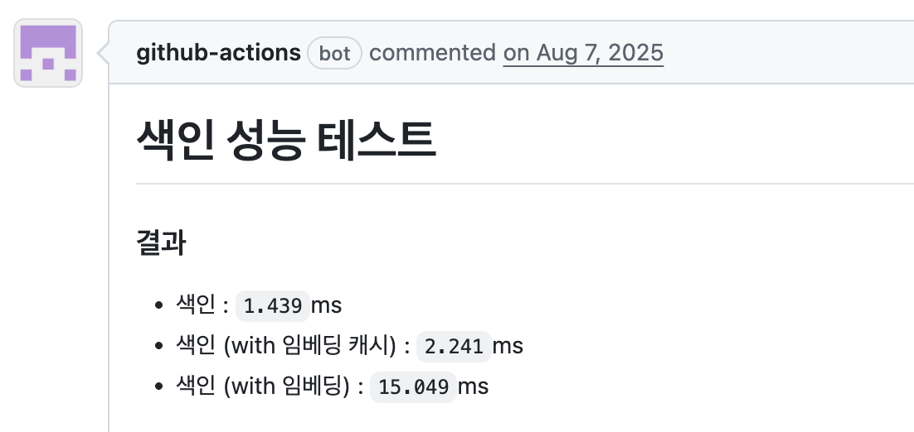
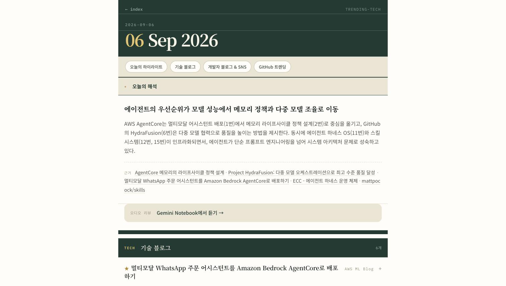

김은미
토스(비바리퍼블리카)
ML Search Platform Team Lead
C++ 개발부터 웹서비스, ML, 검색까지 여러 기술에 도전하고, 레거시를 MSA로 전환하며, 대용량 트래픽과 데이터를 다루는 등 도전적인 과제를 계속 맡아왔습니다. 지금은 토스에서 팀을 이끌며, 여러 서비스가 함께 쓰는 검색 플랫폼을 설계·개발하면서 각 팀의 요구사항을 조율하고, 팀에 AI를 적용해 생산성을 높이는 데 힘쓰고 있습니다.
토스(비바리퍼블리카)
2021 — 현재
네이버
2020.03 — 2021
카카오
2015.06 — 2020.03
다음
2010.02 — 2015.06
한글과컴퓨터
2007.02 — 2010.01
레거시 개선 · MSA 개선
대용량 대규모 트래픽에 대비한 설계 및 구현
AI 적용하여 생산성 향상
카카오뱅크와 맞닿아 있는 지점
주도성
업무의 경계 없이 손들고 시도해요
자동화 · 플랫폼화
한 번 만들면 팀 전체가 쓰도록 표준화해요
테스트/배포 환경 구축
테스트와 개발 환경 구축을 중요하게 생각해요

문제 해결에 집중
제한된 환경에서도 '되는 방법'을 먼저 찾고, 리스크를 줄이면서 되돌릴 수 있는 방법을 우선해요
예약어·가이드로 해결
{{ mustacheSample }}되돌릴 수 있는 설계
그래서 말로 설득하기보다 수치와 시각 자료로 근거를 갖춰 설득합니다.
일정 협의도 수치화하여 협의
수치화할 수 없는 경우 - 나만의 기준
매일 논문·빅테크 테크 블로그·주요 개발자 블로그/SNS를 크롤링해 요약하고, NotebookLM으로 오디오를 자동으로 생성하여 들어요.
karellen-kim.github.io/trending-tech

얻은 지식은 업무에 반영하고자 노력한다.
AI 코드 검증
pitest·flaky·메타모핑 테스트로 관심을 갖게 됨
AI 에이전트
피드백 루프 구축, 검색 연동 스킬 제공
Akka Streams
네이버에서 내부 큐에 적용
GraphQL
MSA 네트워크 비용 절감에 적용
프로젝트에 서브 에이전트 도입
팀 Claude 사용 표준화
PR 리뷰를 코드 없이 Claude plan만으로 진행
LLM으로 데이터 분석 업무 확장
검색 통계 분석 등에 활용
코드베이스를 에이전트 친화적으로 전체 리팩토링
Codex·Claude 교차 검증 체계 구축
context7·LSP·cx 등으로 에이전트 검색 커버리지와 정확도 향상
개발 환경에 피드백 루프 적용
AI로 개발하며 얻은 내용을 learn·가드레일·코드리뷰에 반영해 같은 실수가 반복되지 않도록 함
Slack·Git·Notion 업무 취합 Obsidian 위키 구축하고 봇 연동
외부 커뮤니케이션 비용 축소